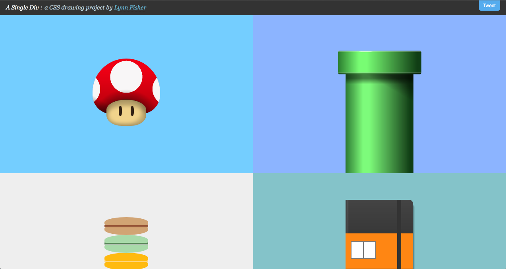
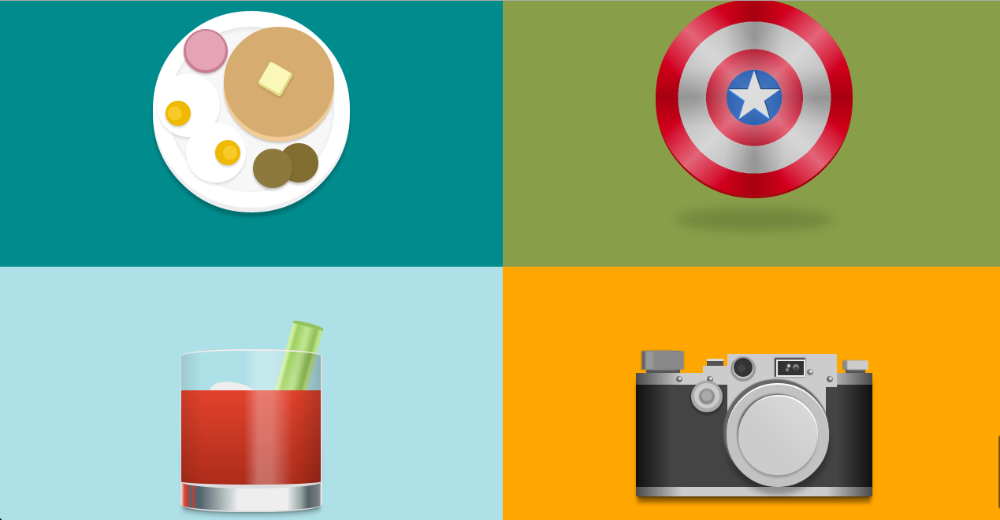
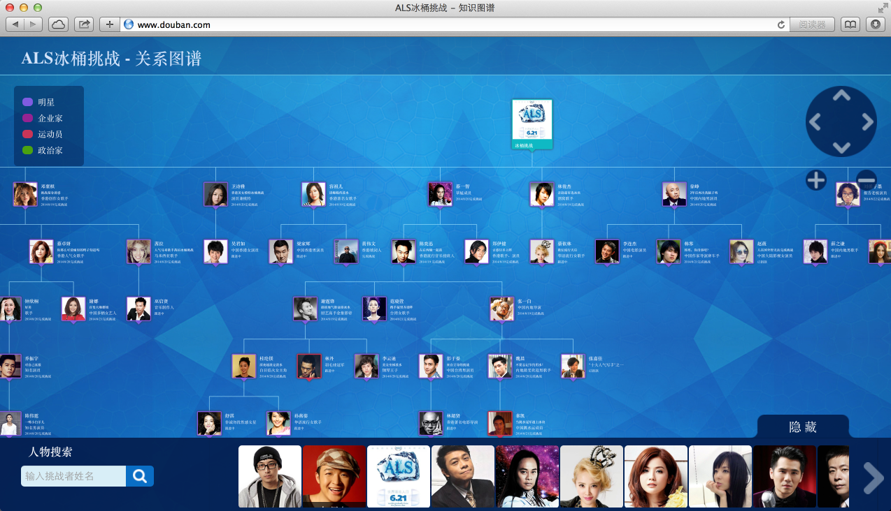

圆角矩形
老一辈们画圆角

现代化的圆角
border-radius: 20px;
除了圆角
box-shadow: 5px 5px 5px black;
transform: perspective(2000px) rotateY(-30deg);
-webkit-filter: blur(5px);
background: linear-gradient(top, #1e5799 0%,#2989d8 50%,#207cca 51%,#7db9e8 100%);
Rendering the World in Browser
.css3-iphone b {
display:block;
position: relative;
margin: 20px auto;
padding: 0px;
width: 335px;
height: 700px;
border-radius: 60px;
border-top: #333 5px solid;
border-right: #474747 5px solid;
border-left: #333 5px solid;
border-bottom: #333 5px solid;
background-color: #000;
background-image:
linear-gradient(top, rgba(0,0,0,0), rgba(0,0,0,0.8) 100%),
linear-gradient(200deg, rgba(255,255,255,0.3) 0%, rgba(255,255,255,0.4) 35%, rgba(0,0,0,0) 35%, rgba(0,0,0,0) 100%),
linear-gradient(left, rgba(0,0,0,1) 5%, rgba(0,0,0,0) 5%, rgba(0,0,0,0) 95%, rgba(0,0,0,1) 95%),
linear-gradient(top, rgba(0,0,0,1) 13%, #264863 5%, #6b8ba7 50%, #082a43 85%, rgba(0,0,0,1) 85%);
box-shadow:#666 0px 20px 50px;
}
.css3-iphone b:before{
content:"";
display: block;
position: absolute;
top:50px;
left:50%;
margin-left:-32.5px;
width:65px;
height:8px;
background:#333;
border-radius:10px;
border-top: #000 4px solid;
border-bottom:#212121 4px solid;
border-left:#000 4px solid;
border-right:#333 4px solid;
box-shadow: inset #000 0px 0px 7px;
}
.css3-iphone b:after {
content: "";
color:red;
font-size: 80px;
text-align: center;
display: block;
position: absolute;
bottom:15px;
margin:0 0 0 130px;
width:75px;
height:75px;
border-radius:100%;
background-image:
linear-gradient(top, rgba(0,0,0,0) 0%, rgba(0,0,0,0) 52%, rgba(255,255,255,0.12) 52%, rgba(255,255,255,0.3) 100%),
radial-gradient(26px 27px, circle, #5b6064 0%, #5b6064 2%, rgba(0,0,0,0) 2%),
radial-gradient(27px 26px, circle, #5b6064 0%, #5b6064 2%, rgba(0,0,0,0) 2%),
radial-gradient(28px 25px, circle, #5b6064 0%, #5b6064 2%, rgba(0,0,0,0) 2%),
radial-gradient(29px 25px, circle, #5b6064 0%, #5b6064 2%, rgba(0,0,0,0) 2%),
radial-gradient(30px 25px, circle, #5b6064 0%, #5b6064 2%, rgba(0,0,0,0) 2%),
radial-gradient(31px 25px, circle, #5b6064 0%, #5b6064 2%, rgba(0,0,0,0) 2%),
radial-gradient(32px 25px, circle, #5b6064 0%, #5b6064 2%, rgba(0,0,0,0) 2%),
radial-gradient(33px 25px, circle, #5b6064 0%, #5b6064 2%, rgba(0,0,0,0) 2%),
radial-gradient(34px 25px, circle, #5b6064 0%, #5b6064 2%, rgba(0,0,0,0) 2%),
radial-gradient(35px 25px, circle, #5b6064 0%, #5b6064 2.5%, rgba(0,0,0,0) 2.5%),
radial-gradient(36px 25px, circle, #5b6064 0%, #5b6064 2.5%, rgba(0,0,0,0) 2.5%),
radial-gradient(37px 25px, circle, #5b6064 0%, #5b6064 2.5%, rgba(0,0,0,0) 2.5%),
radial-gradient(38px 25px, circle, #5b6064 0%, #5b6064 2%, rgba(0,0,0,0) 2.5%),
radial-gradient(39px 25px, circle, #5b6064 0%, #5b6064 2%, rgba(0,0,0,0) 2.5%),
radial-gradient(40px 25px, circle, #5b6064 0%, #5b6064 2%, rgba(0,0,0,0) 2.5%),
radial-gradient(41px 25px, circle, #5b6064 0%, #5b6064 2%, rgba(0,0,0,0) 2%),
radial-gradient(42px 25px, circle, #5b6064 0%, #5b6064 2%, rgba(0,0,0,0) 2%),
radial-gradient(43px 25px, circle, #5b6064 0%, #5b6064 2%, rgba(0,0,0,0) 2%),
radial-gradient(44px 25px, circle, #5b6064 0%, #5b6064 2%, rgba(0,0,0,0) 2%),
radial-gradient(45px 25px, circle, #5b6064 0%, #5b6064 2%, rgba(0,0,0,0) 2%),
radial-gradient(46px 25px, circle, #5b6064 0%, #5b6064 2%, rgba(0,0,0,0) 2%),
radial-gradient(47px 26px, circle, #5b6064 0%, #5b6064 2%, rgba(0,0,0,0) 2%),
radial-gradient(48px 27px, circle, #5b6064 0%, #5b6064 2%, rgba(0,0,0,0) 2%),
radial-gradient(48px 28px, circle, #5b6064 0%, #5b6064 2%, rgba(0,0,0,0) 2%),
radial-gradient(48px 29px, circle, #5b6064 0%, #5b6064 2%, rgba(0,0,0,0) 2%),
radial-gradient(48px 30px, circle, #5b6064 0%, #5b6064 2%, rgba(0,0,0,0) 2%),
radial-gradient(48px 31px, circle, #5b6064 0%, #5b6064 2%, rgba(0,0,0,0) 2%),
radial-gradient(48px 32px, circle, #5b6064 0%, #5b6064 2%, rgba(0,0,0,0) 2%),
radial-gradient(48px 33px, circle, #5b6064 0%, #5b6064 2%, rgba(0,0,0,0) 2.5%),
radial-gradient(48px 34px, circle, #5b6064 0%, #5b6064 2.5%, rgba(0,0,0,0) 2.5%),
radial-gradient(48px 35px, circle, #5b6064 0%, #5b6064 2.5%, rgba(0,0,0,0) 2.5%),
radial-gradient(48px 36px, circle, #5b6064 0%, #5b6064 2.5%, rgba(0,0,0,0) 2.5%),
radial-gradient(48px 37px, circle, #5b6064 0%, #5b6064 2%, rgba(0,0,0,0) 2.5%),
radial-gradient(48px 38px, circle, #5b6064 0%, #5b6064 2%, rgba(0,0,0,0) 2.5%),
radial-gradient(48px 39px, circle, #5b6064 0%, #5b6064 2%, rgba(0,0,0,0) 2.5%),
radial-gradient(48px 40px, circle, #5b6064 0%, #5b6064 2%, rgba(0,0,0,0) 2.5%),
radial-gradient(48px 41px, circle, #5b6064 0%, #5b6064 2%, rgba(0,0,0,0) 2.5%),
radial-gradient(48px 42px, circle, #5b6064 0%, #5b6064 2%, rgba(0,0,0,0) 2.5%),
radial-gradient(48px 43px, circle, #5b6064 0%, #5b6064 2%, rgba(0,0,0,0) 1px),
radial-gradient(48px 44px, circle, #5b6064 0%, #5b6064 2%, rgba(0,0,0,0) 1px),
radial-gradient(48px 45px, circle, #5b6064 0%, #5b6064 2%, rgba(0,0,0,0) 2%),
radial-gradient(48px 46px, circle, #5b6064 0%, #5b6064 2%, rgba(0,0,0,0) 2%),
radial-gradient(47px 47px, circle, #5b6064 0%, #5b6064 2%, rgba(0,0,0,0) 2%),
radial-gradient(46px 47px, circle, #5b6064 0%, #5b6064 2%, rgba(0,0,0,0) 2%),
radial-gradient(45px 47px, circle, #5b6064 0%, #5b6064 2%, rgba(0,0,0,0) 2%),
radial-gradient(44px 47px, circle, #5b6064 0%, #5b6064 2%, rgba(0,0,0,0) 2%),
radial-gradient(43px 47px, circle, #5b6064 0%, #5b6064 2%, rgba(0,0,0,0) 2.5%),
radial-gradient(42px 47px, circle, #5b6064 0%, #5b6064 2%, rgba(0,0,0,0) 2.5%),
radial-gradient(41px 47px, circle, #5b6064 0%, #5b6064 2%, rgba(0,0,0,0) 2.5%),
radial-gradient(40px 47px, circle, #5b6064 0%, #5b6064 2%, rgba(0,0,0,0) 2.5%),
radial-gradient(39px 47px, circle, #5b6064 0%, #5b6064 2%, rgba(0,0,0,0) 2.5%),
radial-gradient(38px 47px, circle, #5b6064 0%, #5b6064 2%, rgba(0,0,0,0) 2.5%),
radial-gradient(37px 47px, circle, #5b6064 0%, #5b6064 2%, rgba(0,0,0,0) 2.5%),
radial-gradient(36px 47px, circle, #5b6064 0%, #5b6064 2%, rgba(0,0,0,0) 2.5%),
radial-gradient(35px 47px, circle, #5b6064 0%, #5b6064 2%, rgba(0,0,0,0) 2.5%),
radial-gradient(34px 47px, circle, #5b6064 0%, #5b6064 2%, rgba(0,0,0,0) 2.5%),
radial-gradient(33px 47px, circle, #5b6064 0%, #5b6064 2%, rgba(0,0,0,0) 2.5%),
radial-gradient(32px 47px, circle, #5b6064 0%, #5b6064 2%, rgba(0,0,0,0) 2.5%),
radial-gradient(31px 47px, circle, #5b6064 0%, #5b6064 2.5%, rgba(0,0,0,0) 2.5%),
radial-gradient(30px 47px, circle, #5b6064 0%, #5b6064 2.5%, rgba(0,0,0,0) 2.5%),
radial-gradient(29px 47px, circle, #5b6064 0%, #5b6064 2.5%, rgba(0,0,0,0) 2.5%),
radial-gradient(28px 47px, circle, #5b6064 0%, #5b6064 2%, rgba(0,0,0,0) 2%),
radial-gradient(27px 47px, circle, #5b6064 0%, #5b6064 2%, rgba(0,0,0,0) 2%),
radial-gradient(26px 46px, circle, #5b6064 0%, #5b6064 2%, rgba(0,0,0,0) 2%),
radial-gradient(26px 45px, circle, #5b6064 0%, #5b6064 2%, rgba(0,0,0,0) 2%),
radial-gradient(26px 44px, circle, #5b6064 0%, #5b6064 2%, rgba(0,0,0,0) 2%),
radial-gradient(26px 43px, circle, #5b6064 0%, #5b6064 2%, rgba(0,0,0,0) 2%),
radial-gradient(26px 42px, circle, #5b6064 0%, #5b6064 2%, rgba(0,0,0,0) 2%),
radial-gradient(26px 41px, circle, #5b6064 0%, #5b6064 2%, rgba(0,0,0,0) 2%),
radial-gradient(26px 40px, circle, #5b6064 0%, #5b6064 2%, rgba(0,0,0,0) 2.5%),
radial-gradient(26px 39px, circle, #5b6064 0%, #5b6064 2%, rgba(0,0,0,0) 2.5%),
radial-gradient(26px 38px, circle, #5b6064 0%, #5b6064 2%, rgba(0,0,0,0) 2.5%),
radial-gradient(26px 37px, circle, #5b6064 0%, #5b6064 2.5%, rgba(0,0,0,0) 2.5%),
radial-gradient(26px 36px, circle, #5b6064 0%, #5b6064 2.5%, rgba(0,0,0,0) 2.5%),
radial-gradient(26px 35px, circle, #5b6064 0%, #5b6064 2.5%, rgba(0,0,0,0) 2.5%),
radial-gradient(26px 34px, circle, #5b6064 0%, #5b6064 2.5%, rgba(0,0,0,0) 2.5%),
radial-gradient(26px 33px, circle, #5b6064 0%, #5b6064 2.5%, rgba(0,0,0,0) 2.5%),
radial-gradient(26px 32px, circle, #5b6064 0%, #5b6064 2.5%, rgba(0,0,0,0) 2.5%),
radial-gradient(26px 31px, circle, #5b6064 0%, #5b6064 2.5%, rgba(0,0,0,0) 2.5%),
radial-gradient(26px 30px, circle, #5b6064 0%, #5b6064 2%, rgba(0,0,0,0) 2.5%),
radial-gradient(26px 29px, circle, #5b6064 0%, #5b6064 2%, rgba(0,0,0,0) 2.5%),
radial-gradient(26px 28px, circle, #5b6064 0%, #5b6064 2%, rgba(0,0,0,0) 2.5%)
;
border:#202020 1px solid;
box-shadow:#333 0px -620px 0px -34px,
/* Lock button */
#000 0px -620px 0px -31px,
#000 55px -652px 0px -36px,
#000 58px -652px 0px -36px,
#000 60px -652px 0px -36px,
#000 61px -652px 0px -36px,
#000 64px -652px 0px -36px,
#000 67px -652px 0px -36px,
#000 70px -652px 0px -36px,
#000 73px -652px 0px -36px,
#000 76px -652px 0px -36px,
#000 79px -652px 0px -36px,
#000 82px -652px 0px -36px,
#000 85px -652px 0px -36px,
#000 88px -652px 0px -36px,
#000 91px -652px 0px -36px,
#000 94px -652px 0px -36px,
#000 97px -652px 0px -36px,
#000 100px -652px 0px -36px,
#000 103px -652px 0px -36px,
#000 105px -652px 0px -36px,
#000 108px -652px 0px -36px,
/* side dots */
#000 -170px -580px 0px -36px,
#000 -170px -25px 0px -36px,
#333 169px -580px 0px -36px,
#333 169px -25px 0px -36px,
/* Side buttons */
/* Top button */
#333 -174px -550px 0px -36px,
#333 -174px -548px 0px -36px,
#333 -174px -545px 0px -36px,
#333 -174px -542px 0px -36px,
#333 -174px -539px 0px -36px,
#333 -174px -536px 0px -36px,
#333 -174px -534px 0px -36px,
#333 -174px -531px 0px -36px,
#333 -174px -528px 0px -36px,
#333 -174px -526px 0px -36px,
/* 2nd button */
#333 -174px -470px 0px -36px,
#333 -174px -468px 0px -36px,
#333 -174px -465px 0px -36px,
#333 -174px -462px 0px -36px,
#333 -174px -459px 0px -36px,
#333 -174px -456px 0px -36px,
#333 -174px -454px 0px -36px,
#333 -174px -451px 0px -36px,
#333 -174px -458px 0px -36px,
#333 -174px -456px 0px -36px,
/* 3rd */
#333 -174px -410px 0px -36px,
#333 -174px -418px 0px -36px,
#333 -174px -415px 0px -36px,
#333 -174px -412px 0px -36px,
#333 -174px -409px 0px -36px,
#333 -174px -406px 0px -36px,
#333 -174px -404px 0px -36px,
#333 -174px -401px 0px -36px,
#333 -174px -408px 0px -36px,
#333 -174px -406px 0px -36px
;
}
A single div
A single div
SVG
- xml描述
- dom结构
- 能够用css描述样式
- 便捷的图形管理以及鼠标事件
- 慢，不能操作像素
Canvas
- 指令式API
- 高效灵活，能够操作像素
- 自己管理图形以及鼠标事件
ZRender
- 底层Canvas图形库
- 支持类似svg的图形管理和鼠标事件
- svg加载
可视化
找你妹
袜袜袜袜袜袜袜袜袜袜袜袜袜袜袜袜袜袜袜袜袜袜袜袜袜袜袜袜袜袜袜袜袜妹袜袜袜袜袜袜袜袜袜袜袜袜袜袜袜袜袜袜袜袜袜袜袜袜袜袜袜袜袜袜袜袜袜袜袜袜袜袜袜袜袜袜袜袜袜袜
通过图形表达数据
借助视觉传递信息
前端可视化解决方案 - ECharts

现状
- 开源中国热门标签国内排名第一
- Github 2697 star

可视化案例
百度人气

世界杯专题


冰桶挑战
3D ?
WebGL

马赛克方块

最终版
DOTA2 英雄预览